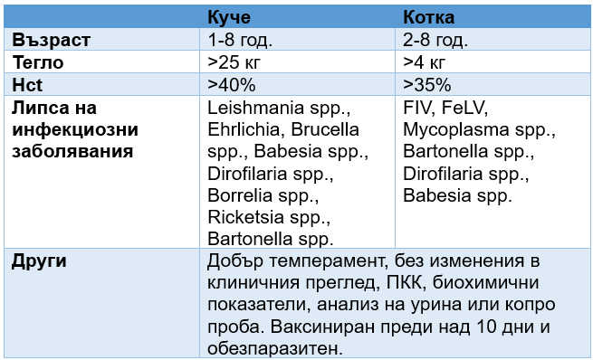
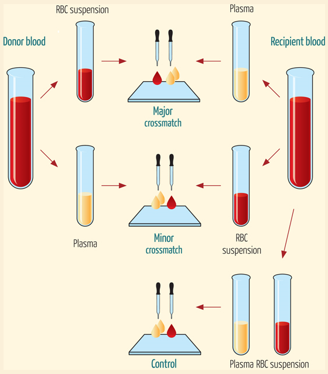
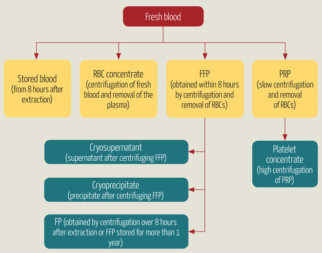
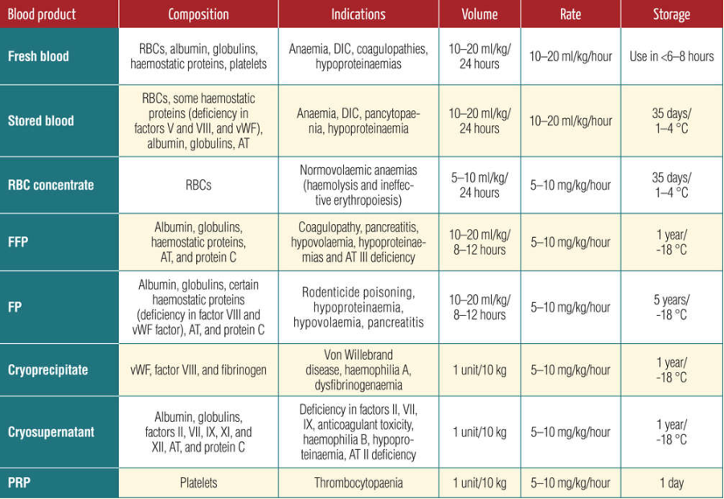
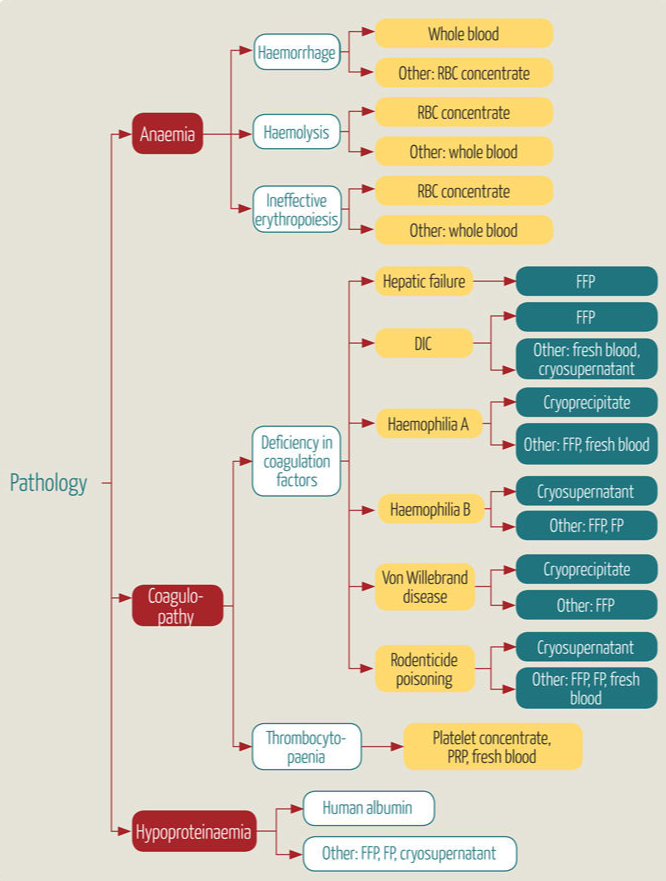

🟥 Изисквания за донора:

Донорът се изследва:
- Тест за съвместимост
- ПКК и биохимични заболявания
- CaniV-4 тест (куче)
- FIV/ FeLV тест (котка)
Тест за съвместимост (Compatability test)

Алгоритъм:
- Вземи кръв чрез ЕДТА епруветка от донора и от реципиента. Надпиши епруветките.
- Центрофугирай двете проби и отдели плазмата от еритроците. Надпиши епруветките.
- Вземи три предметни стъкла и ги надпиши: „голям“, „второстепенен“, „контрола“.
- Сложи една капка от еритроцитите и две капки от плазмата на всяко предметно стъкло:
- Голям – донор Ер + реципиент плазма
- Малък – реципиент Ер + донор плазма
- Контрола: реципиент Ер + реципиент плазма
- Инкубирай за 2 минути на стайна температура.
- Виж дали има аглутинация не само макроскопски, но и микроскопски.
Освен лабораторния тест за съвместимост съществуват и DG Gel и DiaMed-ID.
Главен кросмач (кръстосана съвместимост) – алоантитела от плазмата на реципиента атакуват клетките на донора. Кръвопреливането не трябва да се извърши!
Второстепенен кросмач (кръстосана съвместимост) – алоантитела от плазмата на донора атакуват клетките на реципиента. При второстепенен кросмач при кучетата може да се кръвопрелеят еритроцитите на донора, но не и серума. При второстепенен кросмач при котки кръвопреливането не трябва да се извърши!
Второстепенния кросмач не се появява при кучетата донори, които не са били кръвопреливани преди и не е от голямо значение, защото плазмата на донора е малка и ще се разреди в тази на реципиента.
Главният и второстепенният кросмач могат да покажат несъвместимост преди всяко кръвопреливане заради наличието на естествени алоантитела при котки, нe само при кръвна група AB, но и при Mik.
При котките е дсотатъчно капка кръв от реципиента да се смеси с капка кръв от донора.
🟥 Нужни материали:
- CPDA банка за кръв
- Кръвопреливна система с филтър (най-добре е да е 170 мк)
- Абокат
- При котките: 20 мл спринцовка със сива игла.
🟥 Взимане на кръв от донора:
При кучета:
- Кучето се поставя на висока маса.
- Поставя се абокат на v. cephalica.
- Свързва се CPDA банката с абоката.
- Човек държи банката, като я върти бавно и внимателно близо до пода до масата.
- От кучета над 23 кг може да се вземе 450 мл кръв.
При котки:
- Предварително чрез 20 мл спринцовка се изтегля 3,5 мл хепарин (на 20 мл се пада 3,5 мл хепарин Провет, а в статия – 1 мл 3,8% цитрат на всеки 9 мл кръв).
- Котката се фиксира в поза сфинкс.
- Кръвта се взима със сива игла от v. jugularis.
- От котки над 4 кг може да се вземе 40 мл кръв.
Кръв, взета чрез спринцовка, се използва до 48-ия час, тъй като това е отворена система.
Ако на всеки 4 седмици се взима кръв от донора, то трябва да се дава два пъти седмично железен сулфат (10 мг/кг).
Кръвните продукти се приготвят чрез центрофуга през първите 8 часа от взимането на кръвта. Кръвните продукти се стоплят на топла баня (37°C). Кръвните продукти, които се затоплят на стайна температура, не трябва отново да се замразяват/ охлаждат.
🟥 Кръвопреливане:
На реципиента се инжектира:
- Нолпаза
- Дексаметазон
- Антихистамини
През първите 5 минути се вливат 1-3 мл. През първите 15 мин се наблюдава за нежелани реакции от кръвопреливането. Кръвопреливането трябва да приключи за 4 часа.
Две формули:
Обем на прелятата кръв (мл) = 2 * Hct (желаното увеличение, %) * тегло на ЖВ (кг)
(т. е. на всеки 2 мл цяла кръв/ кг тегло хематокрита се повишава с 1%.)
Целим да достигнем хематокрит 25-35%.
VT (мл) = тегло (кг) * обем на цялата кръв на ЖВ (90 мл/кг) * [ (желан Hct – Hct на реципиента) / Hct на донора]
🟥 Кръвни продукти:


